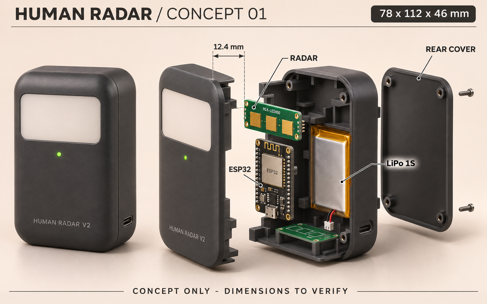

CONCEPT 01 · PORTABLE SENSOR
A small shell.
A clear purpose.
ร่างกล่องอุปกรณ์ให้เห็นภาพก่อนสร้างจริง
เรดาร์ด้านหน้า · ESP32 ตรงกลาง · แบต LiPo ด้านหลัง
กรอบขนาดตั้งต้น / W × H × D
78 × 112 × 46
mm · ขนาดสมมติสำหรับคอนเซปต์
ยังไม่ใช่แบบพร้อมพิมพ์ 3D
ต้องวัดบอร์ด แบต และช่องสายจริงก่อน
01 สำรวจตัวกล่อง
INTERACTIVE / DRAG TO ROTATE
เบราว์เซอร์นี้เปิด 3D ไม่ได้ ยังดูภาพคอนเซปต์ด้านล่างได้ครับ
HUMAN RADAR / DESIGN V1ลากเพื่อหมุน · เลื่อนเพื่อซูม
02 ภาพคอนเซปต์
AI-GENERATED / VISUAL DIRECTIONภาพสร้างด้วย AI เพื่ออธิบายภาษาการออกแบบ ไม่ใช่ภาพถ่ายชิ้นงานจริง
รูปอุปกรณ์และระยะในภาพอาจคลาดเคลื่อน ใช้ตัวเลขในตารางเป็นสมมติฐานของโมเดล

DESIGN INTENT
พื้นที่เล็ก ๆ
ที่แต่ละชิ้นมีที่ของมัน
เรดาร์วางด้านบน แยกช่องมองออกจากวงจรและแบต ฝาหลังเปิดเข้าถึงการเดินสายได้ เผื่อช่องเสียบไฟกับรูเสียงไว้ที่ส่วนล่าง
12.4 mmระยะตั้งต้นระหว่างเสาอากาศเรดาร์กับผิวด้านในของฝาหน้า อิงคำแนะนำผู้ผลิต แต่ยังต้องทดลองกับวัสดุจริง
| ชิ้นส่วน | ขนาด / แนวคิด | สถานะ |
|---|---|---|
| กรอบกล่อง | 78 × 112 × 46 mm | สมมติ |
| HLK-LD2450 | 44 × 15 mm · แนวนอน | อิงผู้ผลิต¹ |
| ESP32 dev board | 28 × 54 mm โดยประมาณ | ต้องวัดรุ่นจริง |
| LiPo ทรงแบน 1S | 35 × 55 × 6 mm โดยประมาณ | ต้องวัดก้อนจริง |
| ผนัง / RF window | ผนัง 2 mm · หน้าต่าง 1.2 mm | ต้องทดลองวัสดุ |
| ชุดจ่ายไฟ / พอร์ต | สำรองช่อง 46 × 22 mm | ไม่ใช่วงจรใหม่ |
ขนาด แรงดัน และความจุของแบตจะยึดตามป้ายจริง โมเดลนี้แสดงแพ็กเกจและพื้นที่ติดตั้ง ส่วนวงจรชาร์จและเวลาทำงานต้องพิจารณาจากอุปกรณ์จริง